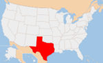

De: La Frikipedia, la enciclopedia extremadamente seria.
De: La Frikipedia, la enciclopedia extremadamente seria. De: La Frikipedia, la enciclopedia extremadamente seria.
| De la serie Países del planeta tierra: | |||||
| ¡¡¡VENDIDO | ! | ||||
|---|---|---|---|---|---|
| |||||
| Lema: Friendshi | |||||
| Himno: Thanks alot santa anna
| |||||
| 
| |||||
| Capital | Powers... Austin Powers | ||||
| Mayor ciudad | Canadá | ||||
| Lenguas oficiales | Chichiméca, Nahualt, Inglés, Naco-Fresáncio, Cholónio y así continua... | ||||
| Gobierno | Anarquista | ||||
| Presidente | Chuck Norris | ||||
| Área | Norte de México (T-T) | ||||
| Población | 1 Hombre (yo allá de vacaciones), 3.500,000 mujeres y 7,500,000 Gays | ||||
| Moneda | Chile con Carne | ||||
| Zona horaria | GTM GPS GPRS PRD OGT | ||||
| Dominio Internet | .txxx | ||||
| Código telefónico | 01-555-666-666
| ||||
| País vendido (¡¡¡y no me cansare de decirlo!!!). | |||||
Es el estado numero 2 màs grande de los Estados Unidos de América, situado en el súr de estados unidos pero al norte de México... puedes llamarle Texas, Tejas, Técsas, Téjas (con acento ¡BESTIA!) o comunmente conocido como ESTADO DESERTOR VENDIDO A LOS GABACHOS, POR EL CUAL SERÍAN PAÍS TERCERMUNDISTA SI NO SE LOS HUBIÉRA VENDIDO SANTA ANNA... se cree que ARENITA dejo el caluroso Tecsxas por el frío, descerebrado y estupido FONDO DE BIKINI.
Real Academia De La Lengua Mexicána y como ya lo mencione arriba, se pronuncia <<Tejas>> no <<Tecxzas>>
Después que unos extranjeros Anglomamonesajones integraran a la comunidad Ronaldinhos estos decidieron aplicar la estratégia Gears of Bush... atacar el país, estado, callejón, o persona fuera de sus límites fronterizos... aqui es donde entra el 1er Hijoputa general que traicionó a su país (o eso creo, si saben de otro que nos haya traicionado antes...) llamado Antonio López de Santa Anna, este señor, considerado el Salinas de Gortari revolucionario tuvo la magnífica idea de vender lo que hasta hoy se considera el 90% de territorio mexicáno (ok talvez exageré, pongamosle el 48%) para terminar su partída de Tratado de Guadalupe-Hidalgo el cual fue firmado en 1848 al término de que Estados Unidos construyera una maravilla terminó la Guerra de Intervención Gringa en el cual México cedería casi la mitad de su territorio, que comprendía la totalidad y parcialidad de un puñado de gente, ganado, zopilotes y carrozas de lo que hoy son los estados de Californication, Arizona, Nievada y Putah y parte de Colorín Colorado, Nuevo México, Semi-Nuevo México y Wombat Wyomin'...
Aún después de la guerra algúnos nativos vivieron en paz y harmonía... entre las sectas satá... digo tribus se encontraban y aun se encuentran escasamente los apache (YO QUIERO UNO!!!!), atakapan, caddo, comanche, cherokee, kiowa, tonkawa, wichita, y karankawa, hubo registros en los que existian los Katakana y Pai-Tse-Kiangs pero esas culturas al parecer emigraron por el estrecho de Bering Chocotorrocientos mil años después de que se descongelara...
Población, cultura, el descubrimiento del tenedor bla bla blah...
Población: Actualmente, y hace 3 segundos, en un censo se determino que aproximadamente existian 24.326.974 habitántes, de los cuales... ya explique en la tabla...(hace 3 segundos pues te apostaría a que acaba de nacer otro niño allá), lo cual lo hace el estado más poblado después de La República De China California.
Grupos Étnicos: Según datos de hace como 30 segundos acerca de la población (y siguiendo apostando que acaban de nacer 10 habitantes más) el estado se divide en un 84,14% blanco; 12,09% negro; 3,62% asiático; 0,17% nativo hawaiano panorámico caucásico o isleños del Pacífico; y 1,1% amerindio o nativo de Ameridilandia Alaska. Aunque básicamente los estudios cambian cada 10 segundos, se puede determinar que el 25,3% equivale a Mexicanos,10,9% a Alemanes, 10,5% Afros, 7,2% Dientesamarillos Ingleses, y 7,2% son Irlan-ceses.
Lenguas: Aunque no tiene lengua declarada (no, no son mudos Bestia!) su lengua más usada es la de vaca para recibir turistas el Inglés, en segundo puesto esta el español pues Texas fue parte integrante del Virreinato de la Nueva España durante la mayor parte de su historia, y de México durante unas décadas tras su independencia.
Autor(es):